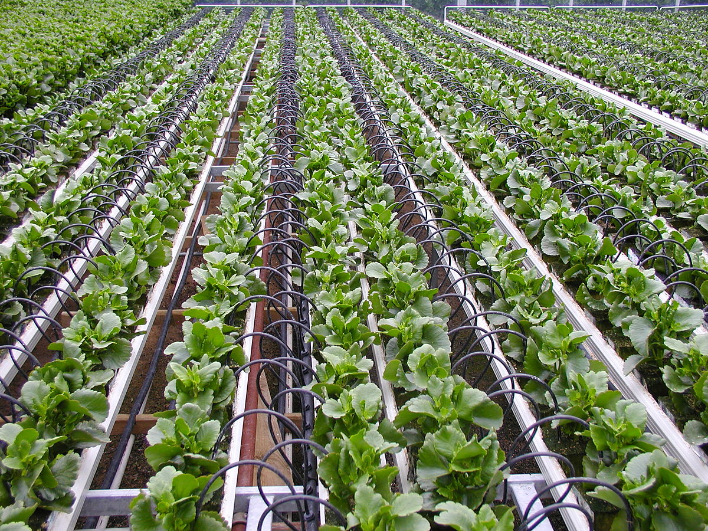
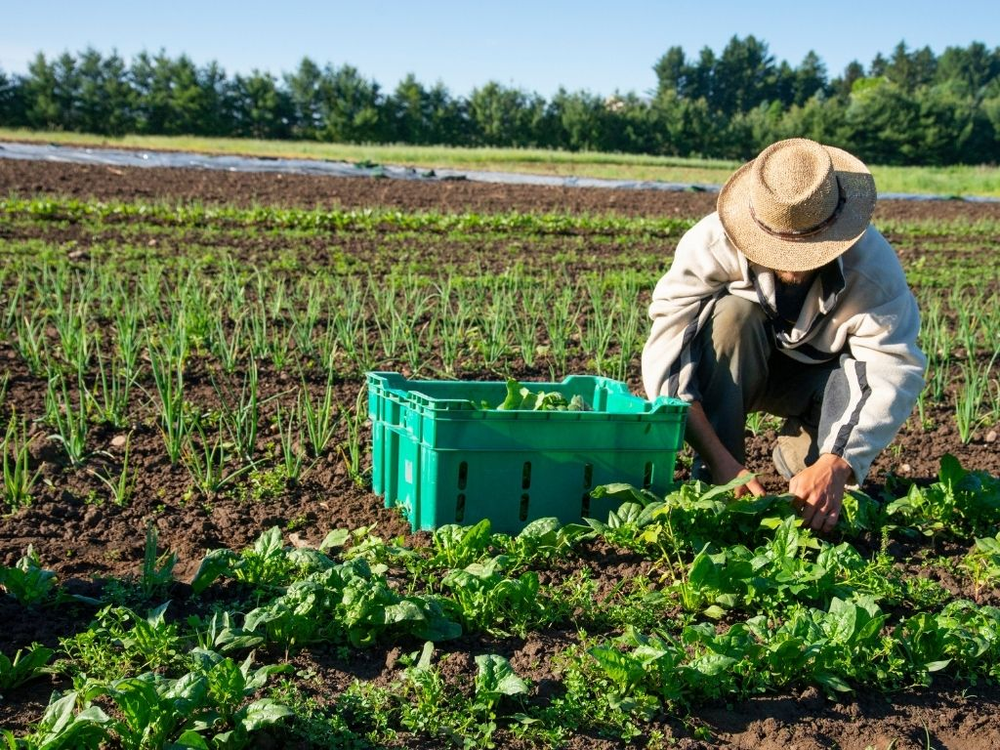

What is Crop Rotation?
Crop rotation is a farming practice where different crops are planted in a specific sequence on the same piece of land each year. This helps improve soil health, reduce pest and disease problems, and increase overall crop yields.

Agroforestry
Agroforestry combines trees into agricultural systems, providing benefits such as improved soil health, increased biodiversity, and better water management, while also supporting farmers' incomes.

Water Conservation and Efficient Irrigation
Using efficient irrigation methods, such as drip irrigation, can conserve water by delivering it directly to the roots of the plants or crops. This minimizes waste and ensures optimal growth.

Organic Farming
Organic farming uses natural methods for fertilization and pest control, reducing chemical inputs, promoting biodiversity, and enhancing soil health for long-term agricultural sustainability.

Vertical Farming
Vertical farming grows crops in stacked layers or controlled indoor environments, maximizing space and water use while reducing the need for arable land and transport emissions.